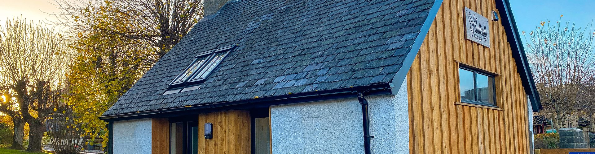

Grantown-on-Spey · Cairngorms-Nationalpark
Ein Cottage für zwei mitten in den Cairngorms
Ferien in einem umgebauten Nebengebäude aus dem 19. Jahrhundert. Ein Schlafzimmer, eine eigene Terrasse, und bis zu den Anagach Woods, zum Spey und in die High Street sind es nur ein paar Gehminuten.

Herbst an der Woodside Avenue
- Personen2 + 2 Kinder
- Schlafzimmer1 Doppelzimmer
- Bad1 eigenes Bad
- Grösse32 m²
- HundeNach Absprache
- ParkenEigener Platz, E-Auto
- GeöffnetGanzjährig
Willkommen
Jeder Spaziergang hier hat seinen eigenen Zauber
Willkommen in den schottischen Highlands. Mittendrin liegt Grantown-on-Spey, ein wunderschönes Städtchen am Fluss Spey.
Die Gegend lädt zu langen, gemächlichen Spaziergängen ein, dem Fluss entlang und durch die Kiefernwälder. Jeder davon hat seinen eigenen Zauber. Geniessen Sie das und verbringen Sie Ihre Ferien bei uns im Ferienhaus, einem kleinen, warmen Ort für zwei, mit allem, was Sie brauchen, und nichts, was Sie nicht brauchen.
Wenn Sie sich lieber verwöhnen lassen und morgens ans gedeckte Frühstück kommen möchten, finden Sie das passende Zimmer gleich nebenan im Garden Park Guest House.


Eine Garage, eine Übungshalle, eine Waschküche
Erbaut zwischen 1754 und 1868
Das Cottage war einmal die Garage des ersten Hauses an der Woodside Avenue. Später nutzte es die Territorialarmee als erste Übungshalle im Ort, eine Zeit lang diente es auch als Waschküche. Heute ist es elegant und trotzdem heimelig und steht ruhig in einem gut angelegten Garten von rund 2000 Quadratmetern.
Der Golfplatz von Grantown, der Uferweg am Spey und die Kiefernwälder der Anagach Woods liegen alle ganz in der Nähe. Bis zur High Street mit ihren inhabergeführten Läden, Restaurants und Pubs sind es ein paar Minuten. Grantown gehört zum Cairngorms-Nationalpark.
„Eine ehemalige Garage, sehr hochwertig saniert, mit moderner Heiztechnik und viel Fantasie im Design.“
Gast aus Wymondham · April 2024Innen
Zweiunddreissig Quadratmeter, sauber durchdacht
Ein Schlafzimmer mit eigener Dusche und ein offener Wohnraum mit Küche, Esstisch und Sitzecke. Heizkosten, Strom, Bettwäsche und Handtücher sind im Mietpreis inbegriffen.
Schlafen
- Doppelbett mit Holzrahmen
- Schlafsofa für bis zu zwei Kinder (max. 10 Jahre)
- Bettwäsche und Handtücher inbegriffen
- Zusätzliche Bettwäsche oder Handtücher auf Anfrage
- Schallgedämmte Fenster
Küche
- Kombi-Backofen und Glaskeramik-Kochfeld
- Mikrowelle und Kühlschrank mit Gefrierfach
- Geschirrspüler
- Wasserkocher, Toaster, Kaffeemaschine
- Geschirr, Gläser und Besteck
- Esstisch für zwei
Bad
- Bodenebene Dusche im eigenen Bad
- Waschbecken und WC
- Bademäntel liegen bereit
- Pflegeprodukte
- Haartrockner
Komfort
- Zentralheizung, Strom inbegriffen
- Smart TV mit Kabelprogrammen
- Gratis WLAN im ganzen Haus
- Standventilator für warme Tage
- Im ganzen Cottage wird nicht geraucht
- Willkommenspaket bei der Ankunft
Draussen
- Eigene Terrasse mit Tisch und Stühlen
- Garten, 12 auf 4 Meter, nicht eingezäunt
- Genügend Parkplätze abseits der Strasse
- Trockenraum zur Mitbenutzung
- Easee-Ladestation fürs Elektroauto, gegen Gebühr
- Rund 2000 Quadratmeter Garten zur Mitbenutzung
Galerie
Schauen Sie sich um
Tippen Sie auf ein Foto, um es gross zu sehen.
Ein Filmrundgang durch das Cottage
Drei Minuten von der Haustür bis zur Terrasse, damit Sie genau wissen, was Sie buchen. Das Video lädt erst, wenn Sie auf Abspielen drücken.
Gut zu wissen
Alles Wichtige vor der Buchung
Keine Überraschungen und kein Kleingedrucktes, das irgendwo in einem PDF versteckt ist. Wenn Sie etwas davon besprechen möchten, rufen Sie uns einfach an oder schreiben Sie uns.
- Ankunft
- 16 bis 19 Uhr. Sarah oder Daniel übergeben Ihnen die Schlüssel im Garden Park Guest House, 30 Meter entfernt. Bringen Sie bitte einen Ausweis oder Ihre Buchungsbestätigung mit. Im Cottage wartet Ihr Willkommenspaket, bereit fürs erste Frühstück.
- Abreise
- Bis 9.30 Uhr.
- Mindestaufenthalt
- Je nach Datum verschieden, oft drei Nächte. Im Buchungskalender sehen Sie, was für Ihre Daten gilt.
- Gäste
- Zwei Erwachsene und bis zu zwei Kinder (max. 10 Jahre) auf dem Schlafsofa.
- Hunde
- Nach Absprache willkommen. Die Gebühr beträgt £39 pro Buchung und Woche.
- Inbegriffen
- Heizkosten, Strom und Wasser, Bettwäsche und Handtücher.
- Zusätzlicher Wäschewechsel
- £30 für jeden weiteren Wechsel von Bettwäsche und Handtüchern.
- Grundreinigung
- £95, nur dann verrechnet, wenn das Cottage mehr als eine normale Endreinigung braucht.
- Zahlung
- Eine Anzahlung von 23 Prozent des Buchungsbetrags bestätigt die Buchung. Sie wird nach unseren Stornobedingungen zurückerstattet. Der Restbetrag ist 21 Tage vor der Anreise fällig.
- Stornierung
- Wir empfehlen Ihnen eine Reiseversicherung. Rückerstattungen sind nur im Rahmen unserer Stornobedingungen möglich.
- Rauchen
- Im ganzen Cottage wird weder geraucht noch gedampft. Bitte lassen Sie die Rauchmelder unangetastet.
- Elektroautos
- Easee-Ladestation vor Ort, Abrechnung über die App Tap Electric. Der Strom fürs Laden ist nicht im Mietpreis enthalten.
- Wäsche
- Der Waschsalon Wash.ME an der Spey Avenue 39 ist zwei Gehminuten entfernt und rund um die Uhr offen.
- Zertifizierung
- Gold-Standard von Green Tourism Ltd für unser Engagement in der Nachhaltigkeit. Energieeffizienzklasse D.
Gästebewertungen
Was unsere Gäste sagen, wenn sie wieder zu Hause sind
4,9 / 5
„Wir hatten eine wunderbare Woche im Butterfly Cottage. Schon nach der Buchung bekamen wir ein tolles Paket …“
„Schönes kleines Zuhause, gemütlich und kompakt. Gut ausgestattet und ein sehr bequemes Bett.“
„Erstklassige Gastgeber, sehr herzlich. Daniel und Sarah plaudern beide gern, sie sind ein Gewinn für den Ort.“
„Man geht zu Fuss ins Zentrum, Pub, Bar, Läden und ein ausgezeichnetes indisches Restaurant. Toller Ort.“
Die Umgebung
Grantown-on-Spey und die Cairngorms
Grantown wurde im 18. Jahrhundert gegründet und ist die historische Hauptstadt von Strathspey. Als Ausgangspunkt für Tagesausflüge, Whisky, Natur und Küste ist der Ort kaum zu schlagen. Von hier aus erkunden Sie bequem Strathspey und Badenoch, Speyside, Morayshire, Nairnshire, Inverness und die Küste am Moray Firth, alles auf sternförmigen Fahrten. Seit 2003 gehört Grantown zum Cairngorms-Nationalpark, mit 3800 km² dem grössten im Vereinigten Königreich.
Wandern und Wildtiere
Die Anagach Woods und der Speyside Way beginnen wenige Minuten von der Haustür entfernt, keine andere Unterkunft liegt näher am Weg. In der Region leben Rothirsche, Otter, Delfine, Steinadler, Fischadler und Baummarder, und das RSPB-Zentrum am Loch Garten ist eine kurze Autofahrt entfernt.
Whisky
Am Malt Whisky Trail liegen acht Brennereien und eine Küferei, die noch in Betrieb ist, darunter The Cairn, die Brennerei von Grantown.
Golf
Acht Plätze sind bequem erreichbar, nämlich Grantown, Carrbridge, Boat of Garten, Abernethy Golf Club, Newtonmore, Kingussie, Aviemore und Craggan. Für Schläger und Schuhe haben wir einen abschliessbaren Raum mit Trockenmöglichkeit.
Burgen und Geschichte
Ballindalloch Castle, Cawdor Castle und das Schlachtfeld von Culloden erreichen Sie alle in einer Stunde. Das Grantown Museum liegt gleich um die Ecke.
Auswärts essen
Mittag- und Abendessen bieten wir nicht an. Dafür machen wir seit 2025 unser kleines feines Sandwich, den Brügel, ein richtig rustikales Sandwich nach Schweizer Art. Zu jeder Buchung gehört ein PDF mit allen Restaurants und Cafés im Ort. Ob Sie vegan leben oder Fleisch und Fisch lieben, Sie finden den richtigen Platz.
Wo Sie essen können, sehen Sie auf unserer interaktiven Karte. Wählen Sie dort den Filter „Discover Grantown“ und dann „Eat & Drink“ oder „Cafés & Take-away“.
Angeln und Outdoor
Angeln und Pirschjagd organisieren wir Ihnen während Ihres Aufenthalts mit einem ortskundigen Guide. Reiten, Ponytrekking, Vogelbeobachtung, Skifahren, Snowboarden und Wildwasserfahren sind alle in der Nähe.
Unsere interaktive Karte der Highlands
Handverlesene Ziele mit Fahrzeiten und fertige Ideen für Tagesausflüge, sortiert in sechs Kategorien auf drei Karten. Die persönlichen Favoriten von Sarah und Daniel sind auch dabei.
Ihre Gastgeber
Sarah, Daniel und Lucy
Wir wohnen nebenan im Garden Park Guest House und sind nie weit weg. Das Cottage gehört trotzdem ganz Ihnen. Wir sprechen Englisch und Deutsch, Daniel ausserdem Italienisch.

Sarah
Begrüsst Sie bei der Ankunft und kennt jeden Weg im Wald.

Daniel
Hat die Karten gemacht, die Sandwiches und diese Website.

Lucy
Dalmatinerin. Antwortet auf Österreichisch. Hat nichts gegen andere Hunde.
Wir sind Sarah und Daniel
2019, Ende dreissig, haben wir die Schweiz verlassen und das Garden Park Guest House übernommen, weil wir Gastgeber sein wollten.
Seither haben wir unermüdlich am Garden Park gearbeitet und unterwegs das Butterfly Cottage gebaut, unser Ferienhaus.
Unzählige Stunden und viele stolze Momente später arbeiten wir immer noch unermüdlich daran, dass unsere Gäste zu einem richtigen Highland-Frühstück aufwachen. Hausgemacht, frisch und mit Liebe zubereitet, nach einer erholsamen Nacht.
Wir lieben, was wir tun.
Und wir sind wirklich gern Gastgeber.
Der Garden Park soll mehr sein als ein Bett für eine Nacht.
Er soll ein Ort sein, an den Sie zurückkommen wollen.
Und mit Grantown-on-Spey als Ausgangspunkt liegen die Cairngorms, Speyside, Moray und der Nordosten Schottlands perfekt vor der Tür.
Kommen Sie für die Highlands.
Bleiben Sie für das Erlebnis.
Kommen Sie zurück, weil es sich wie zu Hause angefühlt hat.
Buchung
Schauen Sie, ob Ihre Wunschdaten frei sind
Direkt bei uns zu buchen ist am günstigsten. Keine Vermittlungsgebühr, und Sie sprechen mit den Leuten, die Ihnen nachher die Schlüssel geben.
AdresseButterfly Cottage
Woodside Avenue
Grantown-on-Spey PH26 3JN
Schottland
Telefon+44 1479 873235
E-Mailrelax@butterfly-cottage.co.uk
relax@garden-park.co.uk
Beide Adressen erreichen uns, nehmen Sie die, die Ihnen lieber ist.
AnfahrtIn Google Maps öffnen
Geben Sie im Navi PH26 3JL ein, das führt Sie zum Parkplatz.